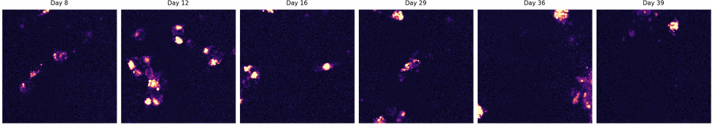

I13_ROI005
I13 / PLD3_mCherry_reporter_control
Manual identity status: uncertain_identity
Pass days: 8|12|16|29|36|39
Review days: 20|32
Excluded days: 25
Common-overlap crop: x=515:707, y=884:1076

mCherry metric summary
| rows | 6 |
|---|
| mean_puncta_count | 6.333 |
|---|
| mean_punctate_mean_intensity | 322.2 |
|---|
| mean_diffuse_mean_intensity | 25.12 |
|---|
| mean_diffuse_to_punctate_ratio | 3.132 |
|---|
| mean_punctate_fraction | 0.2515 |
|---|
| mean_diffuse_fraction | 0.7485 |
|---|
| valid_rows | 6 |
|---|
Colocalization summary
| rows | 6 |
|---|
| mean_manders_a_in_b | 0.03972 |
|---|
| mean_manders_b_in_a | 0.209 |
|---|
Warnings: channel_a_possible_saturation_or_clipping
- Crop path
- Large microscopy file stored locally/shared drive
- Metadata
- LOCAL_PROCESSED_OUTPUT/full_mcherry_valid_defg_pass5/wells/I13/neuron_rois/I13_ROI005/I13_ROI005_metadata.json
- mCherry metrics
- LOCAL_PROCESSED_OUTPUT/full_mcherry_valid_defg_pass5/wells/I13/neuron_rois/I13_ROI005/I13_ROI005_mcherry_metrics.csv
- Colocalization metrics
- LOCAL_PROCESSED_OUTPUT/full_mcherry_valid_defg_pass5/wells/I13/neuron_rois/I13_ROI005/I13_ROI005_colocalization_metrics.csv
Preliminary output. Requires manual ROI identity review before biological interpretation.
Overlap-Only ROI Source
This ROI candidate was generated from the overlap-only common-overlap stack when pass5 source metadata points to registered_common_overlap.
- Output level
- overlap_only_analysis
- Well retained overlap
- 20.7%
- Full-registered crop box
- x=1301:2428, y=550:2058
- Traceability
- Overlap crop is stored in registered-frame coordinates. Per-day original-space mapping requires applying the inverse registration shift for each day.